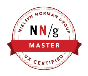

I have been designing digital experiences for complex organizations for over a decade. I was lucky enough to learn from the best in the UX field – Nielsen Norman Group – achieving the prestigious UX Master Certification and the recognition of three specialties: Interaction Design, UX Management and Mobile & Multi-Channel UX.
Currently Head of User Experience at Translated.
Matesub is the first subtitling web tool that provides artificial intelligence suggestions during the transcription, spotting and translation processes with the goal of freeing creative-people’s time and leaving room for the most inspiring part of their work: delivering emotions.
Updated daily with news, photo galleries and specials, GreenStyle proposes itself as a new voice in the panorama of environmental information in Italy, adopting a fresh outlook, capable of satisfying the curiosity of those in search of the latest eco-sustainable news.
Powered by Artificial Intelligence and certified by Blockchain's technology, Rocket Capital Investment is a Quantitative Fund Management Company based in Singapore, with a team of entrepreneurs and professionals with over 100 years of cumulative experience, and currently under MAS license's approval.
Since its debut, Agrodolce has marked its own difference from simple recipe books, placing itself as a place where food is told, above all through the discovery of products, characters and places. Another important ingredient of its sudden affirmation as a high-end food magazine is the close links it has woven with its users.
As a great fan of the saga, I knew that sooner or later I would work on something with a Star Wars theme. In this personal project I enjoyed drawing the great Darth Vader on an HTML5 Canvas using JavaScript. Check it out on CodePen.
Reference web magazine for all passionate developers and, over the years, for all experts and professionals in the sector, thanks to the reliability of its guides, the high quality of the content published and a forum among the most active in Italy .
Head of User Experience @ Translated.
April 2020 – Present
…
Head of UX & Design @ Triboo.
June 2014 – March 2020
...
Head of Design @ Rocket Capital Investment.
April 2017 – March 2018
...
Lead Designer @ Gruppo HTML.
November 2012 – June 2014
...
UX/UI Designer, Product Designer and Front-end Developer @ Freelance.
March 2005 – October 2012
...
UX MASTER Certification @ Nielsen Norman Group
Jakob Nielsen and Don Norman, are recognized around the world for their leadership in defining the field of UX. Together, they founded Nielsen Norman Group, an elite firm dedicated to improving the everyday experience of using technology.
UXMC recognizes practitioners whose extensive training achievement covers a broad range of topics. Most people complete this certificate over a period of 2 or more years and at the time of writing only about 200 professionals in the world have achieved this recognition.
Massimiliano Valente, Founder @ Gruppo HTML, Member of the Board @ Triboo
"Romolo is very knowledgeable in all aspects of User Experience and Product Design. He's got a very strong vision about Human-Computer Interaction and his skills are stimulating for the whole team."
Damiano Barbati, Head Developer @ Translated
“Nobody else I've worked with ever compared to Romolo's works. Tireless, perfectionist and open minded: definitely the best startup mate I've ever had. Great.”
Andrea Marzilli, CTO @ F2 Innovation
"Romolo is an accurate professional, bordering on perfectionism. Among his great qualities there are a lively curiosity that drives him to stay up to date and the ability to share know-how, so it is very pleasant to talk and work together."
Federica Bianco, Front-end Developer @ Gruppo HTML
“He's a brilliant coworker and supervisor from human and collaborative point of view. His web developer knowledge are flawless and get the right support to every plan that evolved with success and innovative goal. I hope to grow beside his professional ability for a long time. Trust him!”